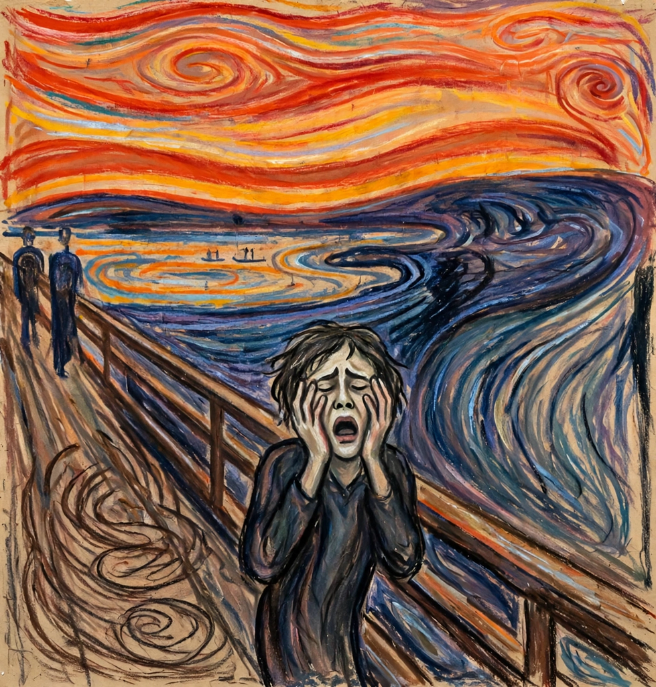

The Scream
| The Scream | |
|---|---|
| Artist | Edvard Munch |
| Year | 1893 (first version) |
| Medium | Oil, tempera, pastel and crayon on cardboard |
| Location | National Gallery and Munch Museum, Oslo |
The Scream is a composition created by Norwegian artist Edvard Munch in 1893. The Norwegian name of the piece is Skrik ("Scream"), and the German title under which it was first exhibited is Der Schrei der Natur ("The Scream of Nature"). The agonised face in the painting has become one of the most iconic images in art, seen as symbolising the anxiety of the human condition. Munch created four versions — two in pastels and two paintings — between 1893 and 1910.

Inspiration and meaning
Munch recalled a walk at sunset in Oslo (then Christiania) when the clouds turned blood red and he felt "a great unending scream piercing through nature". The scene is a view from the Ekeberg hill over Oslofjord, with two indifferent companions walking away in the background. Scholars have proposed influences ranging from Munch's mental state and his sister's confinement in a nearby asylum, to the global skies reddened by the 1883 eruption of Krakatoa, to a Peruvian mummy Munch may have seen in Paris whose posture the figure echoes.
Thefts and fame
The painting has been stolen twice: in 1994 from the National Gallery in Oslo (recovered within months) and in 2004, when armed robbers took the Munch Museum's version in daylight (recovered in 2006, with damage since repaired). The 1895 pastel version sold at auction in 2012 for about US$120 million, then a record for a work of art. The image has saturated popular culture — parodied, reproduced and emoji-fied (😱) — and stands with the Mona Lisa among the most recognised artworks in the world, a cornerstone of modern art that links Expressionism to Munch's fellow modernists such as Vincent van Gogh.